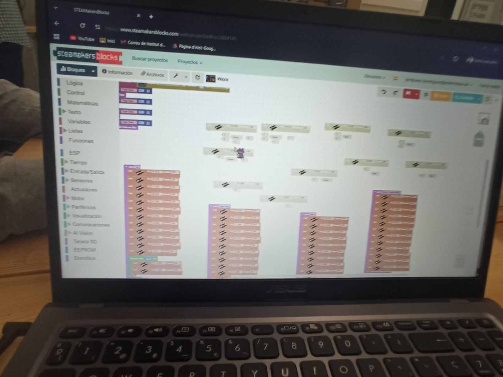
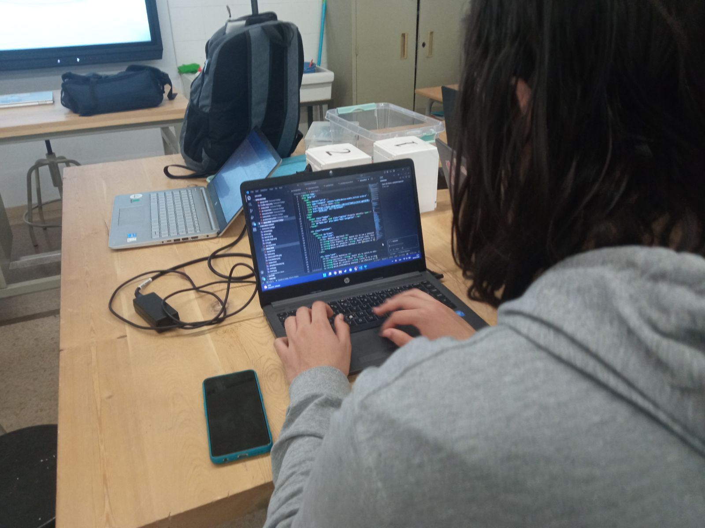
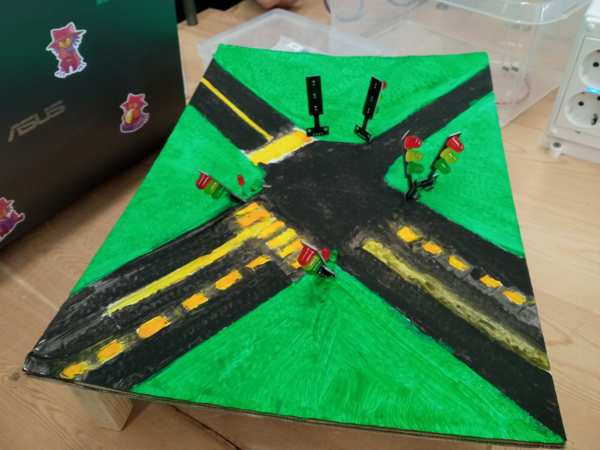

Solucions
- Crear una estació de noticies per cada barri o en altres àmbits com escoles o casals. Aquesta estació hauria de ser dirigida per persones sense poder o relació de cap tipus amb la política i l’estat hauria de donar facilitats i subvencions per la creació d’aquestes estacions.
- Presentacions en les escoles sobre la regulació de les aplicacions i els inconvenients que comporten aquestes (per incentivar als estudiants desenvolupar una nova perspectiva sobre les tecnologies). A més un diari de les tasques fetes seria també una bona idea per fer-li guia a l’alumnat.
- Crear un cartell fixe amb una pantalla que vagi escrivint i informant notícies en general. Aquest cartell hauria de ser organitzat per persones no relacionades amb la política i controlada pels usuaris que passen (botons per passar notícies per exemple).
- Utilitzar la Inteligencia Artificial a les diferents xarxes socials per regular la informació que s’està publicant, un exemple a Twitter quan un missatge difon informació falsa tingui un avís sota seu (creat per la IA que s’encarrega de la regulació, en aquest cas GROK) que mostri que la informació esmentada en el text és falsa i doni proves que justifiquen la nula veracitat del text.


